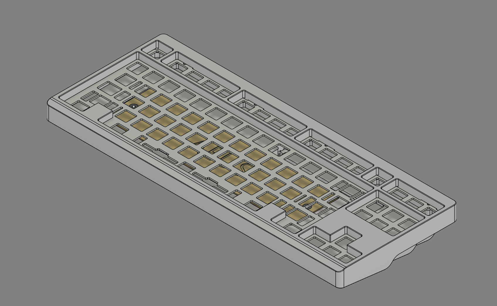
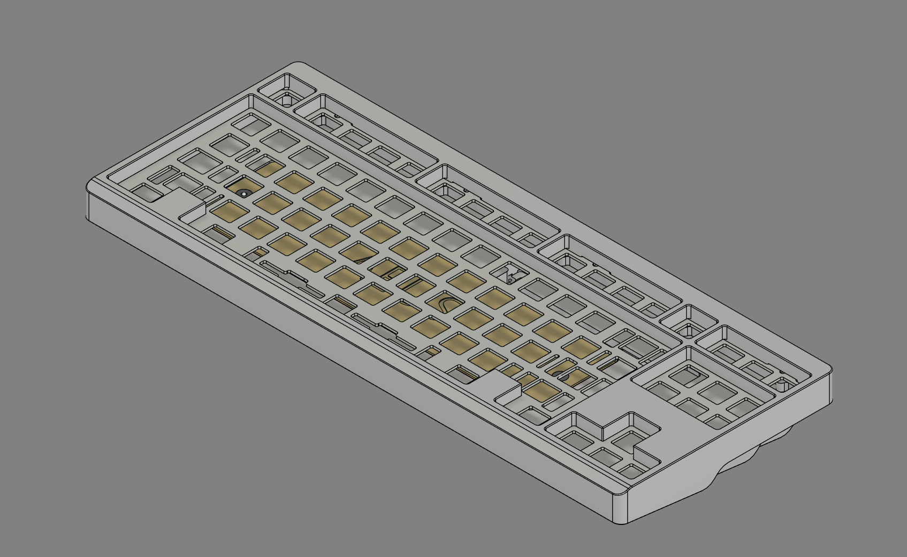

Aria TKL
The Aria TKL was my first keyboard to be produced in quantity, with 20 production boards, and one prototype. Production boards featured custom Pantone 1905 C "Maglia Rosa" anodization. Aria was designed around my personal tastes, and incorporates some of my favorite keyboard features.


 
